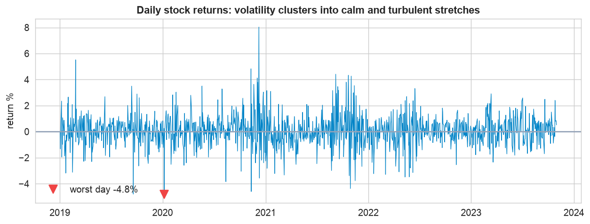
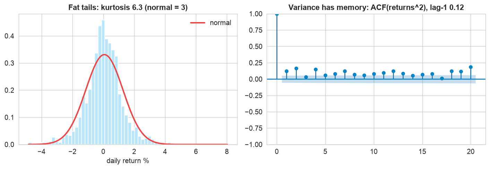
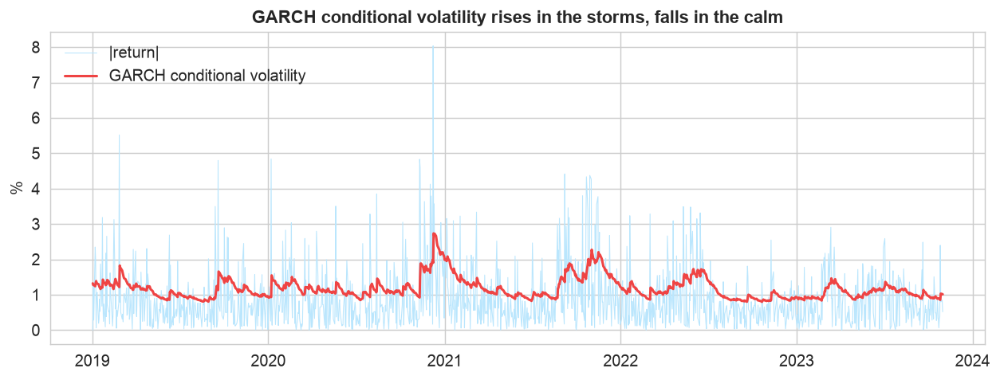
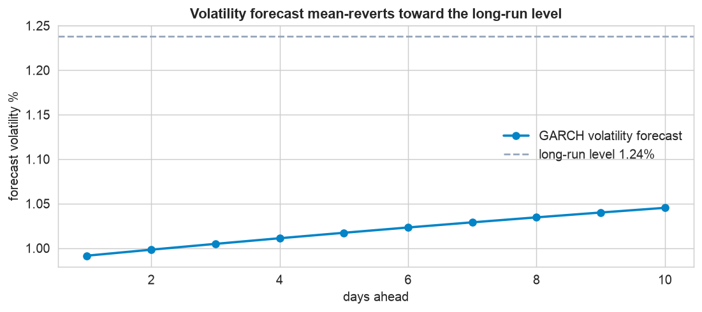
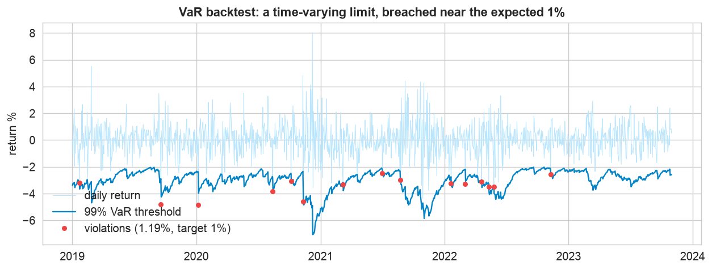

Most of this part forecast the level of a series. Financial returns break that mold: their direction is essentially unpredictable, so no ARIMA will beat a coin flip on tomorrow's move. Yet their risk, the size of the moves, is highly forecastable, because volatility clusters. This chapter turns that forecastable volatility into a concrete risk number: Value-at-Risk.
The 1-day 99% VaR is the loss you expect to exceed on only 1 day in 100. On a $1,000,000 position it will come out near $25,800 here, a single, backtested, forward-looking number a desk can plan and set limits against.
The 12-Step Risk Method
The same case-study discipline, aimed at risk instead of the level. The companion notebook runs all twelve steps; the sections below tell the story and show the plots.
1,260 trading days (2019 to 2023) of daily percent returns for a stock
and its market index. The stock's shocks follow a GARCH process with fat tails, include a crisis
stretch of elevated volatility, and react to the market with a one-day lag. Columns: date,
market_return, stock_return.
Inspect & the Stylized Facts (Steps 1–5)
Define the risk, collect the returns
A desk holds a $1,000,000 position and asks: how much could we lose in a single day? The answer is Value-at-Risk. Because losses are driven by volatility, and volatility is forecastable, this is a forecasting problem, just of the risk, not the return.
Inspect: volatility clusters

Big moves cluster. The returns wander around zero with no trend, but their size comes in waves, quiet spells, then bursts of large swings (including a crisis stretch). That is volatility clustering: the direction is unpredictable, but the risk has memory, which is exactly what makes it forecastable.
The stylized facts, and a test

Two facts every risk model needs. Left: the return distribution is peaked with fat tails (kurtosis about 6.3 vs 3 for a normal), so crashes happen far more often than a bell curve predicts. Right: the ACF of squared returns is clearly positive, volatility is autocorrelated. A formal ARCH-LM test (p < 0.001) confirms the clustering is real and forecastable.
Fit GARCH & Forecast Volatility (Steps 6–8)
Fit and diagnose the model
We fit GARCH(1,1) with a Student-t distribution (the fat tails demand it). The fit shows persistence about 0.98, so a shock to volatility fades slowly, and a low nu ≈ 5, confirming heavy tails. The standardized residuals then pass a Ljung-Box test, meaning the model absorbed the clustering.

The estimated risk over time. The red line is the GARCH conditional volatility: it climbs during the storms and subsides in the calm, exactly tracing the clustering in the size of the moves. This time-varying volatility, not a single average, is what feeds a sensible risk limit.
Forecast volatility

Volatility mean-reverts. GARCH forecasts a whole path: from today's level it drifts toward the long-run average (dashed). After a turbulent day it stays elevated then subsides; in a calm spell it creeps up. That path, not a single number, is what a forward-looking risk limit should use.
Value-at-Risk & Backtesting (Steps 9–10)
Turn volatility into a dollar figure
VaR converts the volatility forecast into money: take today's GARCH volatility, scale it by the 1% quantile of the Student-t (which respects the fat tails), and multiply by the position. The 1-day 99% VaR comes out near 2.6% = $25,800 on the million-dollar position, the loss the desk should be prepared to exceed only a couple of times a year.
Backtest the number

A VaR is only credible if it is backtested. The blue threshold moves with the estimated risk, deepening in the crisis and tightening in the calm. Counting the days the actual loss breached it gives about 1.2%, close to the promised 1% (a formal Kupiec test in Take It Further confirms it passes). The violations are scattered, not bunched, exactly what a well-calibrated, time-varying VaR should produce; a constant-volatility VaR would pile all its breaches into the crisis.
Relationships & Deploy (Steps 11–12)
What leads the stock?
Risk is not only about one stock in isolation. A Granger causality test shows the market Granger-causes the stock (its past helps predict the stock's returns, p < 0.001) but not the reverse. That is a systemic channel: a broad market shock is an early warning for this position, a reason to watch market volatility as a leading risk indicator. As always, Granger is predictive precedence, not proof of cause.
Deploy a daily risk report
In production the risk function reruns each afternoon: refit GARCH on the latest returns, read today's conditional volatility, and publish the VaR. The plain-English report writes itself, “we could lose more than about $25,800 tomorrow with 1% probability; risk is near normal now, but a market shock would raise it fast.” That single, backtested, forward-looking number, with the market as an early warning, is what turns a wall of returns into a decision. The full write-up is below.
Communicate: the Plain-English Write-Up (Step 12)
For the risk committee
What is this? A daily estimate of how much a $1,000,000 position in this stock could lose, together with what drives that risk and how much to trust the number.
What goes in, and what comes out
Input: the stock's daily returns (and the market's). Output: a one-number risk limit, the Value-at-Risk, refreshed every day, plus an early-warning signal from the market.
The decisions we made, and why
- ✓We modeled the risk, not the return. Nobody can predict tomorrow's price move, but the size of moves clusters, so it can be forecast. That is the whole basis of the number.
- ✓We used a fat-tailed distribution. Real markets crash more often than a normal bell curve allows; assuming normal would set the risk limit too low and get us blindsided.
- ✓We backtested the number against five years of history. It was breached about as often as promised (roughly 1% of days), so it is trustworthy, not just plausible.
The headline number
On a $1,000,000 position, the 1-day 99% Value-at-Risk is about $25,800: on a normal day the loss stays under that, but roughly two or three times a year you should expect to lose more. The market is a leading indicator, when it lurches, this stock tends to follow, so watch it as an early warning.
The bottom line
You cannot forecast the return, but you can forecast the risk. Today that risk is about $25,800 of daily Value-at-Risk, it rises fast in turbulent stretches, and a market shock is the earliest sign of trouble. Set limits against the number, and refresh it every day.
Run the whole risk project in Python
The companion notebook is the full 12-step workflow: it confirms the stylized facts, runs an ARCH-LM test, fits a GARCH(1,1) with Student-t innovations, diagnoses the standardized residuals, forecasts volatility, computes and backtests a 1-day 99% Value-at-Risk, tests Granger causality from the market, and wraps a deployable daily-risk function, every step explained.
View opens the rendered notebook instantly.
Open in Colab runs it live. To run locally, install numpy, pandas,
matplotlib, scipy, statsmodels, and arch.
🎓 Key Takeaways
- ✓Forecast risk, not direction: returns are unpredictable in the mean, but volatility clusters and is forecastable.
- ✓Honor the stylized facts: fat tails (kurtosis ~6.3) and variance memory, confirmed by an ARCH-LM test.
- ✓GARCH with Student-t: persistence ~0.98 means turbulence lingers; the fat-tailed distribution sizes the extremes right.
- ✓VaR must be backtested: the 1-day 99% VaR (~$25,800 on $1M) was breached about 1.2% of days, near the 1% target.
- ✓The market leads the stock: a Granger test flags a systemic early-warning channel to watch.
Take It Further
Five ways to sharpen the risk model in the notebook:
Fat tails matter
Compare a normal-VaR to a Student-t VaR; which one under-reserves for crashes?
The Kupiec test
Formally test whether the VaR violation rate is consistent with 1%.
Expected Shortfall
Compute the average loss on the days VaR is breached, the size of a bad day.
Test for the leverage effect
Fit a GJR-GARCH and test whether bad news raises volatility more than good news.
Multi-day VaR
Scale VaR to a 10-day horizon with GARCH, and compare to the square-root-of-time rule.
All five, worked in a companion notebook
A second notebook, Take It Further, rebuilds the Chapter 132 model and works every extension with explanations, normal versus Student-t VaR, the Kupiec backtest, Expected Shortfall, a GJR-GARCH test for the leverage effect, and multi-day VaR versus the square-root rule.
Quiz: Test Yourself
Eight questions on volatility, GARCH, and Value-at-Risk. Answer them, hit Check Answers, and keep refining until you score 100%. Your progress is saved.
From risk back to the level, on a series with strong seasonality. Chapter 138 · Case Study: Energy Demand Forecasting forecasts electricity demand with SARIMA and exponential smoothing, backtested and graded with the full accuracy panel.